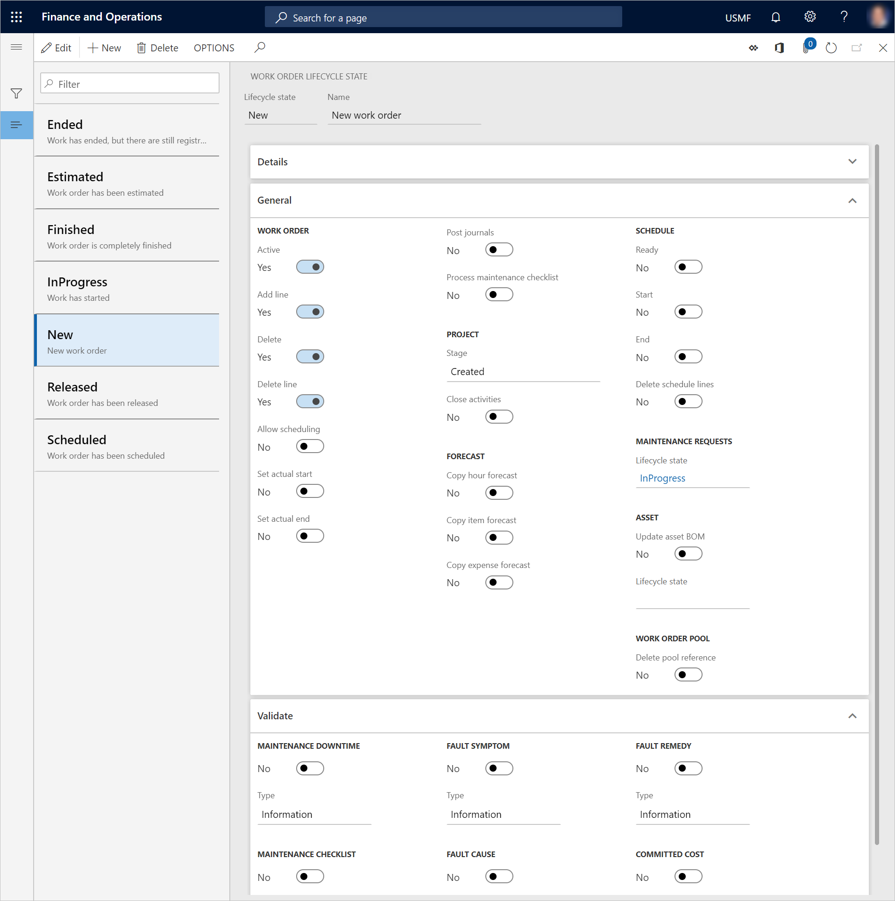
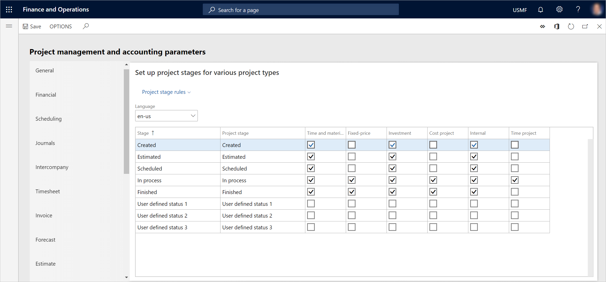
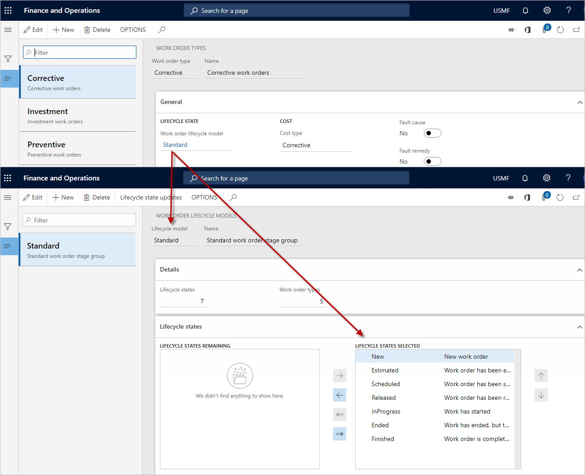
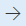
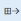
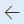
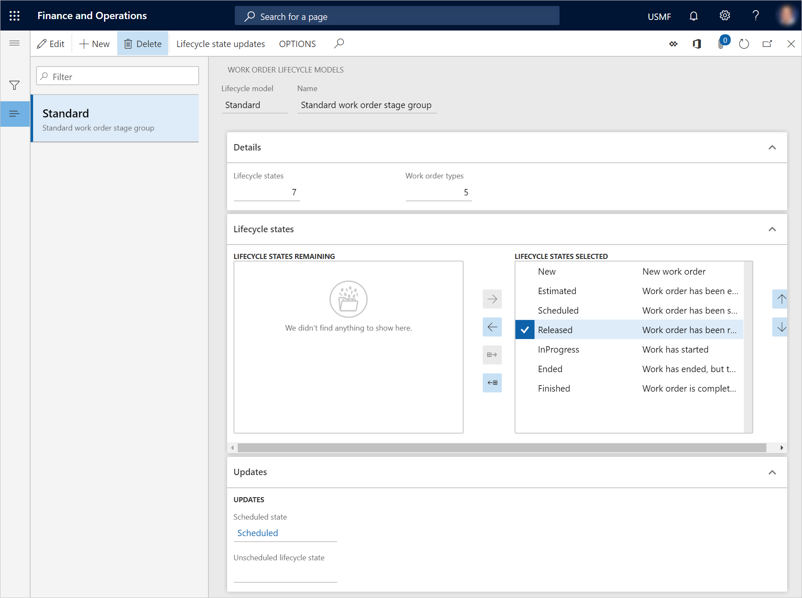

Lebenszykluszustände von Arbeitsaufträgen
Important
Dynamics 365 for Finance and Operations hat sich zu speziell entwickelten Anwendungen entwickelt, mit denen Sie bestimmte Geschäftsfunktionen verwalten können. Weitere Informationen zu diesen Änderungen finden Sie im Dynamics 365-Lizenzierungshandbuch.
Arbeitsauftrags-Lebenszykluszustände definieren die Zustände, die ein Arbeitsauftrag durchlaufen kann. Beispiele sind Erstellt, Planung, in Bearbeitung und Ende. Lebenszykluszustände von Arbeitsaufträgen können manuell auf einem Arbeitsauftrag aktualisiert werden, oder sie können automatisch aktualisiert werden (z.B. bei der Arbeitsauftragsplanung).
Die für Ihre Arbeitsaufträge erforderlichen Lebenszykluszustände der Arbeitsaufträge müssen auf der Seite Projektmanagement- und Abrechnungsparameter (Projektmanagement und Abrechnung) den entsprechenden Projektstufen zugeordnet werden (> Projektmanagement- und Abrechnungsparameter). Sie richten zunächst Projektphasen im Projektmanagement und in der Buchhaltung ein. Anschließend richten Sie im Anlagenmanagement Arbeitsauftrags-Lebenszykluszustände und Arbeitsauftrags-Lebenszyklusmodelle ein.
Die folgende Tabelle beschreibt die Optionen in den Abschnitten Arbeitsauftrag und Terminplan auf der Seite Allgemein FastTab des Lebenszykluszustand des Arbeitsauftrags (Assetmanagement > Setup > Arbeitsaufträge > Lebenszykluszustände).

| Optionsname | Beschreibung |
|---|---|
| Aktiv | Setzen Sie diese Option auf Ja, wenn der Arbeitsauftrag aktiv sein soll, während er sich in diesem Lebenszykluszustand befindet. |
| Position hinzufügen | Setzen Sie diese Option auf Ja, wenn Arbeitsaufträge zu einem Arbeitsauftrag hinzugefügt werden können, der sich in diesem Lebenszykluszustand befindet. |
| Löschen | Setzen Sie diese Option auf Ja, wenn ein Arbeitsauftrag gelöscht werden kann, während er sich in diesem Lebenszykluszustand befindet. |
| Position löschen | Setzen Sie diese Option auf Ja, wenn Arbeitsaufträge aus einem Arbeitsauftrag gelöscht werden können, der sich in diesem Lebenszykluszustand befindet. |
| Terminierung zulassen | Setzen Sie diese Option auf Ja, wenn ein Arbeitsauftrag geplant werden kann, während er sich in diesem Lebenszykluszustand befindet. |
| Tatsächlichen Start festlegen | Setzen Sie diese Option auf Ja, wenn der Benutzer aufgefordert werden soll, ein tatsächliches Startdatum und eine tatsächliche Startzeit für einen Arbeitsauftrag auszuwählen, wenn dieser in diesen Lebenszykluszustand aktualisiert wird. |
| Tatsächliches Ende festlegen | Setzen Sie diese Option auf Ja, wenn der Benutzer aufgefordert werden soll, ein tatsächliches Enddatum und eine tatsächliche Endzeit für einen Arbeitsauftrag auszuwählen, wenn dieser in diesen Lebenszykluszustand aktualisiert wird. |
| Erfassungen buchen | Setzen Sie diese Option auf Ja, wenn Arbeitsauftragsjournale automatisch gebucht werden sollen, wenn ein Arbeitsauftrag in diesen Lebenszykluszustand aktualisiert wird. Wenn bei der Journalbuchung ein Fehler auftritt, wird eine Meldung angezeigt und die Aktualisierung des Lebenszykluszustands des Arbeitsauftrags abgebrochen. Um die Erfassungszeilen für einen Arbeitsauftrag anzuzeigen, wählen Sie Anlagenmanagement > Gemeinsam > Arbeitsaufträge > Alle Arbeitsaufträge, Aktive Arbeitsaufträge, oder Meine aktiven Arbeitsaufträge, wählen Sie den Arbeitsauftrag in der Liste und dann Erfassungen. Diese Einstellung der automatischen Buchung von Arbeitsauftragserfassungen in einem bestimmten Lebenszykluszustand ist die gleiche wie bei der Auswahl von Erfassungen buchen auf der Seite Auftragserfassungen. Hinweis: Wenn Sie diese Option auf Ja einstellen, werden Erfassungen automatisch gebucht, wenn kein Genehmigungsworkflow eingerichtet ist. Wenn Ihr Unternehmen die Einrichtung für die Erfassunggenehmigung verwendet, die auf der Seite Erfassungsgenehmigung konfiguriert ist (Projektmanagement und Abrechnung > Einrichtung > Erfassungen > Erfassungsgenehmigung), muss ein Manager oder Sachbearbeiter die Registrierungen validieren und nach dem Verbrauch durchführen. |
| Wartungsprüfliste verarbeiten | Setzen Sie diese Option auf Ja, wenn alle angehängten Wartungschecklisten bearbeitet werden sollen, wenn ein Arbeitsauftrag auf diesen Lebenszykluszustand aktualisiert wird. Im Rahmen dieser Bearbeitung werden alle Schalteranmeldungen, die auf einer Wartungscheckliste vorgenommen wurden, gebucht und das Ergebnis der gesamten Wartungscheckliste ausgewertet. Wartungs-Checklistenzeilen, die Bestanden und Fehler Ergebnisse haben, werden ausgewertet, und wenn mindestens eine Zeile ausfällt, wird die gesamte Wartungs-Checkliste im Anlagenmanagement als Fehler gekennzeichnet. |
| Bereit | Setzen Sie diese Option auf Ja, wenn der Status der Arbeitsauftragsplanung für alle Arbeitsaufträge, die auf einem Arbeitsauftrag erstellt werden, automatisch auf Bereit aktualisiert werden soll, wenn der Arbeitsauftrag auf diesen Status aktualisiert wird. |
| Start | Setzen Sie diese Option auf Ja, wenn der Status des Arbeitsauftrags-Jobplans für alle Arbeitsaufträge, die auf einem Arbeitsauftrag erstellt werden, automatisch auf Gestartet aktualisiert werden soll, wenn der Arbeitsauftrag auf diesen Lebenszykluszustand aktualisiert wird. |
| Beenden | Setzen Sie diese Option auf Ja, wenn der Status der Arbeitsauftragsplanung für alle Arbeitsaufträge, die auf einem Arbeitsauftrag erstellt werden, automatisch auf Ende aktualisiert werden soll, wenn der Arbeitsauftrag auf diesen Status aktualisiert wird. |
| Zeitplanpositionen löschen | Setzen Sie diese Option auf Ja, wenn die Einplanung aller Arbeitsaufträge, die auf einem bereits eingeplanten Arbeitsauftrag erstellt wurden, gelöscht werden soll, wenn der Arbeitsauftrag in diesen Lebenszykluszustand aktualisiert wird. Mit anderen Worten, Kapazitätsreservierungen auf der Anlage, dem zugehörigen Instandhalter und den zugehörigen Werkzeugen werden gelöscht. Sie setzen diese Option beispielsweise auf Ja für einen Arbeitsauftragslebenszykluszustand, der Geschätzt genannt wird. Wenn dann ein Arbeitsauftrag in diesen Lebenszykluszustand zurückgesetzt wird, weil eine Neuterminierung erforderlich ist, kann die Terminierung auf diesem Arbeitsauftrag gelöscht werden. |
Einrichtung von Projektphasen und Lebenszykluszuständen von Arbeitsaufträgen
Wählen Sie Projektmanagement und Abrechnung > Einrichtung > Projektmanagement- und Abrechnungsparameter.
Aktivieren Sie auf der Registerkarte Projektphase für jede Stufe, die Sie verwenden möchten, das Kontrollkästchen für jede Projektart, die für Ihre Arbeitsaufträge benötigt wird. Die Projekttypen definieren Regeln über die zulässigen finanziellen Aufgaben. Beispiele für Finanzaufgaben sind die Erstellung einer Prognose, die Erstellung von Schätzungen und die Erstellung von Anfangssalden.
Important
Wenn für einen Projekttyp keine Projektphase ausgewählt wurde, die Projektphase aber für einen Arbeitsauftragslebenszykluszustand verwendet wird, werden die Arbeitsauftragsprojekte nicht in der entsprechenden Weise aktualisiert.
Schließen Sie die Seite Projektmanagement- und Abrechnungsparameter.
Wählen Sie Anlagenmanagement > Einrichtung > Aufträge > Lebenszykluszustände.
Wählen Sie Neu, um einen Arbeitsauftragslebenszyklusstatus zu erstellen.
Geben Sie im Feld Lebenszyklusstatus eine Kennung für den Lebenszyklusstatus ein.
Geben Sie im Feld Name einen Namen ein.
Im Feld Details FastTab zeigt das Feld Lebenszyklusmodelle die Anzahl der Arbeitsauftrags-Lebenszyklusmodelle, die diesen Lebenszykluszustand verwenden.
Wählen Sie auf der Registerkarte Allgemein FastTab im Abschnitt Arbeitsauftrag die Funktionen aus, die für diesen Lebenszykluszustand verfügbar sein sollen, indem Sie die entsprechenden Optionen auf Ja setzen. Beschreibungen der Optionen finden Sie in der Tabelle oben in diesem Thema.
Wählen Sie im Abschnitt Projekt im Feld Stufe die Projektphase aus, die mit diesem Lebenszykluszustand in Beziehung stehen soll.
Setzen Sie im Abschnitt Projekt die Option Aktivitäten schließen auf Ja, wenn Projektaktivitäten, die sich auf jeden Arbeitsauftrag beziehen, automatisch geschlossen werden sollen, wenn sich der Arbeitsauftrag in diesem Lebenszykluszustand befindet.
Note
Um die Nummer der Projektaktivität zu finden, die sich auf einen Arbeitsauftrag bezieht, wählen Sie Anlagenmanagement > Allgemein > Aufträge > Alle Arbeitsaufträge, Aktive Arbeitsaufträge, oder Meine aktiven Arbeitsaufträge. Öffnen Sie den Arbeitsauftrag und wählen Sie dann den Arbeitsauftrag aus. Die Aktivitätsnummer wird im Feld Aktivitätsnummer im Abschnitt Projekt auf der Registerkarte Allgemein der Registerkarte Zeilendetails FastTab angezeigt.
Stellen Sie im Abschnitt Prognose die Option Stundenprognose kopieren, Artikelprognose kopieren, und/oder Aufwandsprognose kopieren auf Ja ein, wenn Projektauftragsprognosen automatisch in Arbeitsauftragserfassungen kopiert werden sollen, wenn sich der Arbeitsauftrag in diesem Lebenszykluszustand befindet.
Setzen Sie im Abschnitt Terminplanung eine der Optionen auf Ja, wenn der Zeitplanstatus für Arbeitsaufträge aktualisiert werden soll, wenn sich der Arbeitsauftrag in diesem Lebenszykluszustand befindet. Die Beschreibungen der Optionen Bereit, Start, Ende und Einteilungen löschen finden Sie in der Tabelle oben in diesem Thema.
Note
Um Einteilungen anzuzeigen, die sich auf Arbeitsaufträge beziehen, wählen Sie Anlagenmanagement > Allgemein > Arbeitsaufträge > Alle Arbeitsaufträge, Aktive Arbeitsaufträge, oder Meine aktiven Arbeitsaufträge. Öffnen Sie den Arbeitsauftrag, wählen Sie den Arbeitsauftrag auf der Seite Arbeitsaufträge FastTab und sehen Sie sich die zugehörigen Informationen auf der Seite Zeilendetails FastTab an. Das Feld Status auf der Registerkarte Terminplan zeigt den Status des Arbeitsauftrags an. Das Feld Status kann auf die folgenden Werte gesetzt werden: Planung, Bereit, Start, Stop, und Ende.
Wählen Sie im Abschnitt Wartungsanforderungen im Feld Lebenszykluszustand den Lebenszykluszustand der Wartungsanforderung aus, in den die zugehörigen Wartungsanforderungen aktualisiert werden sollen. Dieses Update erfolgt automatisch. Dies ist nur möglich, wenn der Lebenszykluszustand der Wartungsanforderung im Lebenszyklusmodell der Wartungsanforderung ausgewählt ist, das für die Wartungsanforderung verwendet wird.
Setzen Sie im Abschnitt Anlage die Option Anlage auf Ja, wenn alle Elemente, die für einen Arbeitsauftrag verwendet werden, automatisch auf der Seite Anlagenstückliste aktualisiert werden sollen, wenn der Arbeitsauftrag in diesen Lebenszykluszustand aktualisiert wird. Diese Einstellung kann z.B. relevant sein, wenn der Lebenszykluszustand des Arbeitsauftrags den Arbeitsauftrag als abgeschlossen oder beendet definiert.
Setzen Sie im Abschnitt Arbeitsauftragspool die Option Poolverweis löschen auf Ja, wenn Arbeitsaufträge, die sich in diesem Lebenszykluszustand befinden, automatisch aus Arbeitsauftragspools gelöscht werden sollen.
Wählen Sie auf der Registerkarte Validieren FastTab die Validierungstypen aus, die in diesem Lebenszykluszustand aktiviert werden sollen, indem Sie die entsprechenden Optionen auf Ja setzen. Wählen Sie dann im Feld Typ für jeden ausgewählten Validierungstyp die Art der Nachricht aus, die angezeigt werden soll, wenn Pflichtfelder, die sich auf den Validierungstyp beziehen, nicht validiert wurden. Wenn Sie Fehler wählen, wird die Aktualisierung des Lebenszykluszustands des Arbeitsauftrags abgebrochen, bis die zugehörigen Pflichtfelder im Arbeitsauftrag aktualisiert wurden.
- Die Wartungsstillstandszeit, Wartungs-Checkliste, Fehlersymptom, Fehlerursache, und Fehlerbehebung Optionen beziehen sich auf die Optionen im Abschnitt Pflicht auf der Seite Auftragsarten (Anlagenmanagement > Einrichtung > Aufträge > Auftragsarten). Um diese Validierungen zu aktivieren, müssen die entsprechenden Optionen auch auf Ja für den Arbeitsauftragstyp eingestellt sein, der für den Arbeitsauftrag verwendet wird.
- Wenn die Option Wartungs-Checkliste auf Ja für den Lebenszykluszustand gesetzt ist, in dem ein Arbeitsauftrag aktualisiert wird, wird eine Validierung durchgeführt, um sicherzustellen, dass Wartungs-Checklistenzeilen, die als Pflicht markiert sind, entweder als Checked oder Nicht anwendbar registriert wurden. Wenn keine dieser Registrierungen auf den Pflichtpositionen vorgenommen wurde, wird eine Informations-, Fehler- oder Warnmeldung angezeigt, wenn der Arbeitsauftrag in diesen Lebenszykluszustand aktualisiert wird.
- Wenn die Option Verpflichtete Kosten auf Ja für den Lebenszykluszustand gesetzt ist, auf den ein Arbeitsauftrag aktualisiert wird, wird der Gesamtbetrag der verbuchten Kosten (d.h. der Gesamtbetrag der Ausgaben, zu deren Zahlung sich die juristische Person verpflichtet hat) für jeden Arbeitsauftrag berechnet. Eine Meldung wird angezeigt, wenn der zugesagte Kostenbetrag größer als 0 (Null) ist. Sie wählen die Arten der Kostenverpflichtung, die auf der Registerkarte Kostenkontrolle auf der Seite Projektmanagement- und Abrechnungsparameter enthalten sind (Projektmanagement- und Abrechnungsparameter > Einrichtung > Projektmanagement- und Abrechnungsparameter).
- Wenn die Option Wartung Ausfallzeit auf Ja für den Lebenszykluszustand gesetzt ist, in den ein Arbeitsauftrag aktualisiert wird, wird die Validierung der Wartungsstillstandszeit für die Anlage durchgeführt, die mit dem Arbeitsauftrag verknüpft ist. Wenn eine Wartungsstillstandsregistrierung durchgeführt wurde, es aber keine Beendet Registrierung gibt, wird eine Meldung angezeigt, wenn der Arbeitsauftrag in diesen Lebenszykluszustand aktualisiert wird.
- Wenn die Standardprojektierung nicht alle Phasen umfasst, die Sie für Ihre Anlageverwaltungseinrichtung benötigen, können Sie benutzerdefinierte Projektphasen auf der Registerkarte Projektphase der Seite Projektmanagement- und Abrechnungsparameter einrichten. Die folgende Abbildung zeigt die Registerkarte Projektphase auf der Seite Projektmanagement- und Abrechnungsparameter.

Note
Wenn der Lebenszykluszustand, in dem Sie einen Arbeitsauftrag aktualisieren, inaktiv ist, werden Journale, die sich auf den Arbeitsauftrag beziehen, aber noch nicht gebucht wurden, automatisch gelöscht. Dieses Verhalten trägt dazu bei, die automatische Bereinigung unbenutzter Daten zu gewährleisten. (Ein Lebenszykluszustand ist inaktiv, wenn die Option Aktiv dafür auf Nein auf der Seite Allgemein FastTab des Lebenszykluszustand Arbeitsauftrag gesetzt ist.)
Wenn Sie einen Arbeitsauftrag jedoch manuell so einstellen, dass er inaktiv ist, werden Journale, die sich auf den Arbeitsauftrag beziehen, aber noch nicht gebucht wurden, automatisch gelöscht nicht. (Um einen Arbeitsauftrag manuell zu deaktivieren, wählen Sie Anlagenmanagement > Allgemein > Aufträge > Alle Arbeitsaufträge oder Aktive Arbeitsaufträge. Öffnen Sie den Arbeitsauftrag und wechseln Sie in die Ansicht Kopf. Wählen Sie auf der Allgemein FastTab Bearbeiten, und setzen Sie dann die Option Aktiv auf Nein.)
Beziehungen zwischen Arbeitsauftrags-Lebenszyklusmodellen, Arbeitsauftragsarten und Arbeitsauftrags-Lebenszykluszuständen
Lebenszyklusmodelle beziehen sich auf Workflows, und Lebenszykluszustände werden in einem Lebenszyklusmodell in sequentieller Reihenfolge ausgewählt. Lebenszyklusmodelle werden auf Basis von Arbeitsauftragsarten erstellt. Arbeitsauftragsarten bestimmen die Größe oder den Umfang von Workflows und Arbeitsprozessen. Beispielsweise könnte Wartung, die ein Standardauftragstyp ist, mit einem Arbeitsauftrags-Lebenszyklusmodell zusammenhängen, das viele Lebenszykluszustände aufweist. Im Gegensatz dazu können Sie eine Korrektur Arbeitsauftragsart haben, die für Arbeitsaufträge verwendet wird, die nicht terminiert wurden, oder für Arbeitsaufträge, bei denen der Auftrag aufgrund einer dringenden Situation abgeschlossen ist, bevor der Arbeitsauftrag ausgeführt wird. Dieser Arbeitsauftragstyp kann sich auf ein Arbeitsauftrags-Lebenszyklusmodell beziehen, das nur wenige Lebenszykluszustände aufweist.
Der Grund für die Verwendung von Typen ist, dass bei der Definition eines Typs, z.B. für einen Arbeitsauftrag oder eine Anlage, die zugehörigen Arbeitsprozesse (Lebenszykluszustände) automatisch definiert werden. Weitere Informationen zum Einrichten von Arbeitsauftragsarten finden Sie unter Auftragsarten.
Note
Lebenszykluszustände, Lebenszyklusmodelle und -typen gelten neben Arbeitsaufträgen auch für technische Standorte, Anlagen und Instandhaltungsanforderungen.
Die folgende Abbildung zeigt den Zusammenhang zwischen Arbeitsauftragsarten, Lebenszyklusmodellen und Lebenszykluszuständen.

Arbeitsauftrags-Phasenmodelle
Nachdem Sie die für Ihre Arbeitsaufträge erforderlichen Lebenszykluszustände der Arbeitsaufträge erstellt haben, können diese in Lebenszyklusmodelle der Arbeitsaufträge unterteilt werden. Sie sollten mindestens ein Standard-Lebenszyklusmodell erstellen.
Wählen Sie Anlagenmanagement > Einrichtung > Aufträge > Lebenszyklusmodelle.
Wählen Sie Neu, um ein Arbeitsauftragslebenszyklusmodell zu erstellen.
Geben Sie im Feld Lebenszyklusmodell eine Kennung für das Lebenszyklusmodell ein.
Geben Sie im Feld Name einen Namen ein.
Auf der Registerkarte Details FastTab zeigt das Feld Lebenszykluszustände die Anzahl der Lebenszykluszustände an, die in diesem Lebenszyklusmodell ausgewählt werden. Das Feld Arbeitsauftragsarten zeigt die Anzahl der Arbeitsauftragsarten, die dieses Lebenszyklusmodell verwenden.
Wählen Sie auf dem Inforegister Lebenszyklusstatus die Lebenszyklusstatus aus, die in das Lebenszyklusmodell einbezogen werden sollen:
- Um einen Lebenszyklusstatus in das Lebenszyklusmodell einzuschließen, wählen Sie ihn im Bereich Verbleibende Lebenszyklusstatus aus, und klicken Sie dann auf die Schaltfläche mit dem Pfeil nach rechts , um ihn in den Bereich Ausgewählte Lebenszyklusstatus zu verschieben.
- Um alle verfügbaren Lebenszykluszustände in das Lebenszyklusmodell aufzunehmen, wählen Sie die Schaltfläche Alle verfügbaren Phasen auswählen Schaltfläche . Alle Lebenszyklusstatus werden in den Bereich Ausgewählte Lebenszyklusstatus verschoben.
- Um einen Lebenszyklusstatus aus dem Lebenszyklusmodell zu entfernen, wählen Sie ihn im Bereich Ausgewählte Lebenszyklusstatus aus, und klicken Sie dann auf die Schaltfläche mit dem Pfeil nach links , um ihn in den Bereich Verbleibende Lebenszyklusstatus zu verschieben.
Wählen Sie Lebenszykluszustand-Updates, um die Lebenszykluszustände zu definieren, die einem ausgewählten Lebenszykluszustand folgen können.
Wählen Sie im Feld Updates FastTab im Feld Geplanter Zustand den Lebenszykluszustand aus, der immer für einen Arbeitsauftrag ausgewählt werden soll, für den Sie die Arbeitsvorbereitung abgeschlossen haben, unabhängig vom vorherigen Lebenszykluszustand des Arbeitsauftrags.Wählen Sie im Feld <1>Ungeplanter Lebenszykluszustand</1> den Lebenszykluszustand aus, der für einen Arbeitsauftrag immer ausgewählt werden soll, wenn die Arbeitsvorbereitung gelöscht wird.
Wählen Sie im Feld Ungeplanter Lebenszyklusstatus den Lebenszyklusstatus, der für einen Arbeitsauftrag immer ausgewählt werden soll, wenn die Arbeitsvorbereitung gelöscht wird.
Speichern Sie das Arbeitsauftrags-Lebenszyklusmodell.
